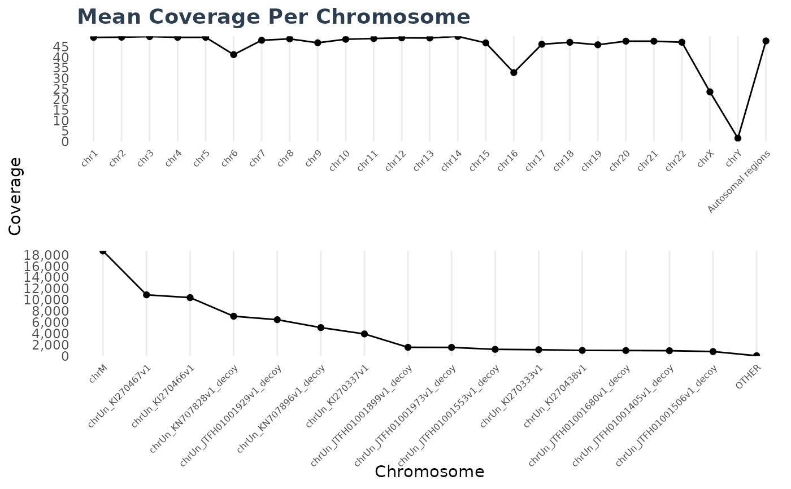

Contains methods for reading and displaying contents of
the wgs_contig_mean_cov_<phenotype>.csv file output from DRAGEN.
This file contains the estimated coverage for all contigs, and an autosomal
estimated coverage.
Super class
dracarys::File -> WgsContigMeanCovFile
Methods
Method read()
Reads the wgs_contig_mean_cov_<phenotype>.csv file output from DRAGEN.
Method write()
Writes a tidy version of the wgs_contig_mean_cov_<phenotype>.csv file output
from DRAGEN.
Method plot()
Plots the wgs_contig_mean_cov_<phenotype>.csv files.
Examples
x1 <- system.file("extdata/wgs/SEQC-II.wgs_contig_mean_cov_normal.csv.gz", package = "dracarys")
x2 <- system.file("extdata/wgs/SEQC-II.wgs_contig_mean_cov_tumor.csv.gz", package = "dracarys")
cc1 <- WgsContigMeanCovFile$new(x1)
cc2 <- WgsContigMeanCovFile$new(x2)
d1 <- cc1$read()
d2 <- cc2$read()
cc1$write(d1, out_dir = tempdir(), prefix = "seqc_n", out_format = "tsv")
cc2$write(d2, out_dir = tempdir(), prefix = "seqc_t", out_format = "tsv")
cc1$plot(d1)

cc2$plot(d2)